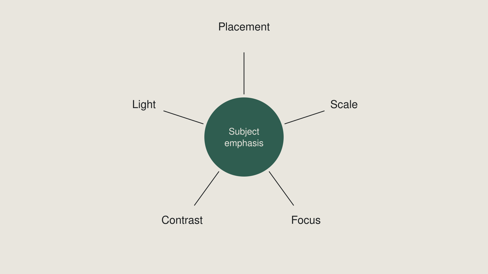

Week 2 slides · Composition
What was on screen in class. Arrow keys or click to move.
1 / 17
Title
Week 2 — Composition
Finding, before making.
2 / 17
The images they brought
Why is yours good?
3 / 17
You are not shooting this week.
You cannot compose deliberately until you can see composition in work that already exists.
4 / 17
Outcomes
By the end of this week you can
- Name the compositional decision in an image someone else made
- Find an image that demonstrates a given term — and defend why it qualifies
- Recognise shallow and deep depth of field, and say what each does
- Recognise frozen and blurred motion, and say what each conveys
- Name what gives an image its subject emphasis — and say which means is doing the most work
5 / 17
Every term is a decision
Every term is something somebody did
| Subject placement | Where the subject sits |
| Balance | How weight is distributed |
| Negative space | What is deliberately left empty |
| Leading the eye | The route attention travels |
| Framing within the frame | A border found in the scene |
| Cropping | Deciding the edge — in the camera |
6 / 17
Subject emphasis
What makes the subject read first.
7 / 17
Five means
Placement · Scale · Focus · Contrast · Light
Placement is one of them.

8 / 17
The centred subject that loses
Shown in class.
9 / 17
The edge subject that wins
Shown in class.
10 / 17
Which one is doing the most work?
"They all work together" is true.
It is not an answer.
11 / 17
Contrast
A difference the eye reads first.
Bright against dim · sharp against soft · saturated against muted
Not a fourth thing. It is how the others work.
12 / 17
Aperture → depth of field
Shallow — isolates the subject · loses the room
Deep — keeps the context legible · emphasises nothing
Shown in class.
13 / 17
Shutter → motion
Frozen — stops the moment · loses the sense that anything moved
Blurred — conveys movement · loses the detail
Shown in class.
14 / 17
You are not setting these
Recognise. Not set.
Outcomes 2.3 and 2.4 are recognise and say what it does.
You set them in week 3.
15 / 17
SURVEYED — not assessed
Manual mode · White balance · ISO and noise · RAW vs JPEG · Card handling and file management
Not expected. Not on the assignment.
White balance and manual exposure return in week 7, where video gives you no auto mode to hide behind.
16 / 17
The lab
Eleven terms. One published image each.
Term named · source credited · one sentence on what it does.
Bring the hard ones to the room and argue them out.
17 / 17